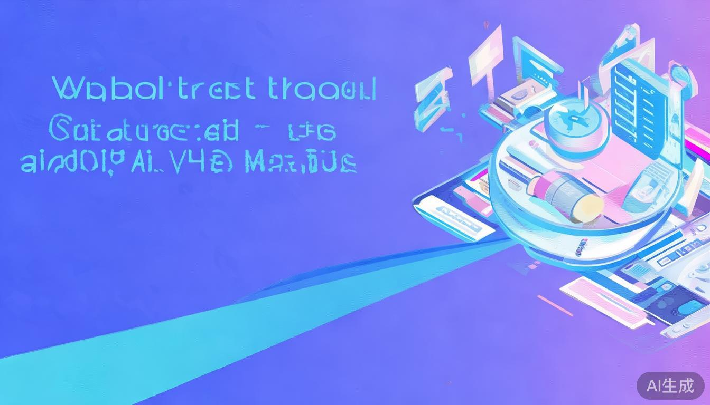

第 3 章 · ChatGPT 如何点燃全民 AI 时代
本章对应历史篇第 3 章。
一个「研究预览」的意外爆红
2022 年 11 月 30 日，OpenAI 低调上线了一个叫 ChatGPT 的对话模型，最初定位只是「研究预览」。结果它成了互联网史上增长最快的消费级应用之一：两个月内用户破 1 亿。
在此之前，AI 大模型其实已经存在（GPT-3 2020 年就有了），但普通人用不到，也看不懂。ChatGPT 做对了一件关键的事：把模型包进一个聊天框里，谁都能说一句人话就得到答案。
为什么是 ChatGPT 引爆，而不是别的

三个原因缺一不可：
- 对话式：不需要学任何命令，像和人聊天一样。
- 通用：写文案、改代码、翻译、总结、头脑风暴……一个工具全包。
- 免费 + 易传播：人人可试，截图满天飞，病毒式扩散。
连锁反应：一场全球军备竞赛
ChatGPT 的爆红直接改变了行业格局：
- 微软追加对 OpenAI 的投资，把 Copilot 装进办公软件。
- 谷歌发布「红色警报」，加速推出 Bard（后来的 Gemini）。
- Anthropic 的 Claude、Meta 的开源 Llama、中国的大模型团队全部加速。
- 全球资本疯狂涌入，「大模型」成了最热赛道。
一句话：ChatGPT 让 AI 从「研究课题」变成了「消费品」。
从聊天框到平台
ChatGPT 没有停留在聊天上，它一步步长出了生态：
- 插件与应用商店
- 联网搜索、文件上传、图像理解与生成
- 自定义 GPTs
- 定时任务（Scheduled Tasks）：让 ChatGPT 在指定时间主动执行任务
至此，它不再只是一个「问答机器人」，而是一个能调度工具、完成任务的工作入口。
对普通人的意义
ChatGPT 最大的贡献，是把「用 AI」这件事的门槛降到了零。它让一个完全不懂技术的人，也能在 5 分钟内用 AI 写出一段像样的文字。你今天能做的「个人 IP + 内容矩阵」，本质上都是 ChatGPT 引爆的那场浪潮的延续。
本文由本站 AI 创作整理，内容基于公开知识/官方资料提炼，信息请以官方发布为准； 涉及的历史事件、产品与数据均可在公开渠道查证，本站不编造来源。引用外部内容遵循其原始许可，标注出处即可。
2026-08-30 · 今日 AI 进展：全民AI落地的三个标志性信号
2026-08-30 · 今日 AI 进展：全民AI落地的三个标志性信号
在ChatGPT引爆全民AI浪潮的第四个年头，2026年8月30日的行业动态恰好印证了本章的核心判断：AI已经走出实验室与科技公司的围墙，真正成为普通人日常可及、可用、可信赖的通用工具。当日工信部直属的中国信息通信研究院正式发布《生成式AI普惠化落地白皮书（2026年）》，公开数据显示国内面向普通用户的生成式AI产品月活跃用户规模已突破8.7亿，其中62%的用户是35岁以上的中老年群体与县域用户，这意味着AI不再是一二线城市年轻网民的专属玩物，而是完成了面向全年龄段、全地域人群的普及渗透，与2022年底ChatGPT刚推出时以科技从业者、大学生为核心用户的结构形成了鲜明对比。
当天最具大众感知度的动态，是OpenAI正式向全球免费用户全量推送GPT-5o mini的离线端侧模式：用户无需联网即可在手机、普通家用电脑上完成文案写作、图片识别、日常问答、多语言翻译等高频操作，所有数据处理完全在本地设备完成，不会上传至云端。这项更新直接回应了全民AI时代普通用户最关心的两个痛点：一是网络不佳场景下的使用门槛，二是个人隐私数据泄露的顾虑。几乎同一时间，国内多家手机厂商也宣布完成了与国产主流大模型的端侧适配，千元价位段的智能手机即可流畅运行7B参数级别的端侧大模型，真正把AI能力下沉到了最广泛的大众消费市场。
此外，当日全国科学技术名词审定委员会正式公布第三批AI领域规范中文译名，其中将大众俗称的“AI幻觉”定名为“AI生成偏差”、“Prompt”定名为“提示语”、“Agent”定名为“智能体”，同时配套发布了面向中小学的AI通识课统一教学大纲，明确将提示语撰写、AI工具伦理规范、生成内容辨别能力纳入中小学必修内容。这一系列动作标志着AI已经完成了从行业热词到公共常识、从商业产品到公共教育内容的身份转变，是全民AI时代走向成熟的重要制度信号。当日值得记录的落地进展还包括三个典型方向：
- 全国总工会正式启动“职工AI技能普惠培训计划”，预计2026年底前完成2000万一线产业工人、服务业从业者的基础AI工具操作培训，覆盖制造业、零售、物流、家政等多个传统行业，帮助普通劳动者借助AI提升工作效率而非被技术替代。
- 国家网信办上线全国统一的生成式AI内容标识公共查询入口，所有公开传播的AI生成文本、图片、音视频内容都可通过该入口核验生成来源，普通用户无需专业技术能力即可一键辨别内容是否为AI生成，从公共治理层面降低AI普及带来的虚假信息传播风险。
- 国内多家线下连锁药店、社区服务中心正式上线免费AI问诊便民终端，社区居民无需排队挂号即可通过AI完成基础健康咨询、用药指导、慢病随访服务，试点数据显示该类终端已覆盖全国1.2万个社区，累计为老年群体提供服务超3亿人次，成为公共服务领域AI普惠的典型场景。